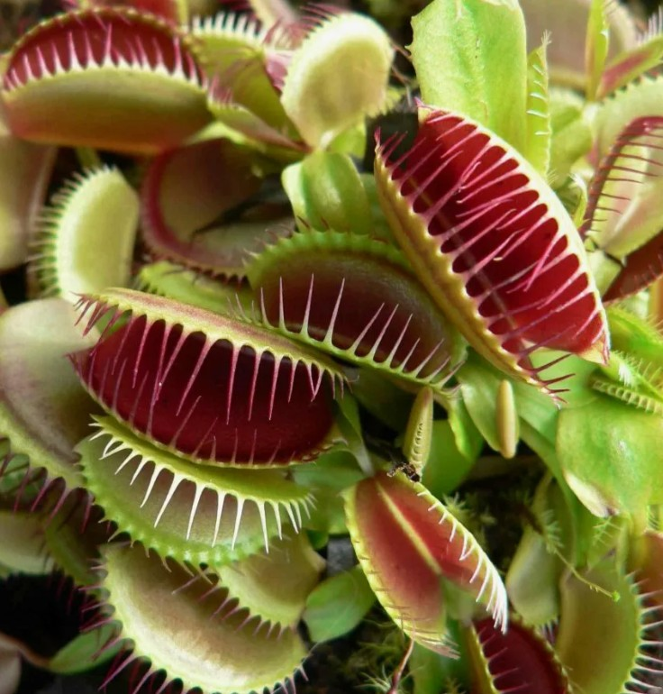
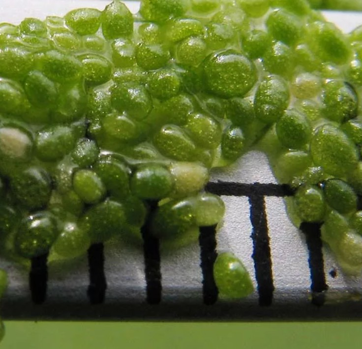
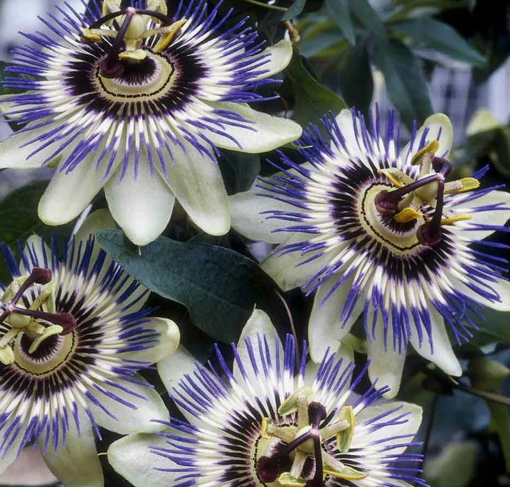
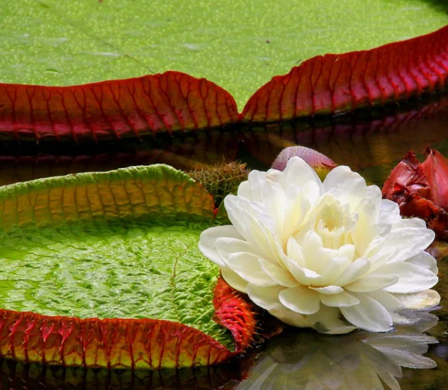
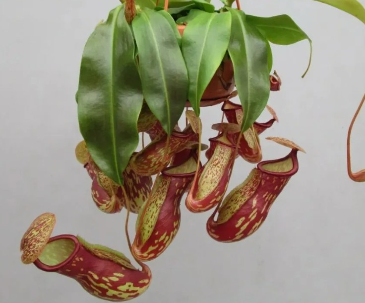

На земле живет огромное количество удивительных существ: от смешных до ужасающих. О многих удивительных растениях мира известно издавна. Но есть совершенно необычные представители флоры, о которых мало кто знает. Между тем они по-настоящему поражают своим внешним видом. Вот некоторые из них:
Аморфофаллус титанический (Amorphophallus titanum)
Второе название – трупная лилия (Corpse lily). Самым необычным растением в мире его делают не только гигантские размеры цветка, но и ужасный запах, который он источает. Хорошо, что обонять аромат тухлого мяса и рыбы приходится всего два дня – таков период цветения этого удивительного растения. Еще одна его особенность – редкое цветение. Живет «трупная лилия» долго, до 40 лет, и за это время цветы на ней появляются всего 3-4 раза. Достигать в высоту растение может до 3 метров, а вес крупного цветка составляет около 75 килограммов. Родина аморфофаллуса титанического – леса Суматры, где сейчас он практически истреблен. Растение можно увидеть во многих ботанических садах мира.

Венерина мухоловка (Dionaea muscipula)
Только ленивый не написал об этом удивительном растении-хищнике. Но сколько бы ни говорилось о нем, венерина мухоловка поражает своей абсолютной чужеродностью. Ее легко можно представить обитателем какой-нибудь далекой и опасной планеты, населенной хищными растениями. Листья венериной мухоловки – идеальная ловушка для мелких насекомых. Как только незадачливая жертва касается листа, он захлопывается. И чем активнее сопротивляется насекомое, тем сильнее стимулирует рост клеток растения. Края ловушки-листа срастаются и превращаются в «желудок», где в течение 10 дней происходит процесс переваривания. После этого ловушка вновь готова к поимке следующей жертвы. Этого необычного хищника можно «приручить» – венерину мухоловку успешно выращивают в домашних условиях. Здесь важно соблюдать правила ухода, и тогда за удивительным плотоядным растением можно будет наблюдать самому.
Вольфия (Wolffia angusta)
Она относится к самым необычным растениям мира из-за своего крошечного размера. Это водное растение подсемейства рясковых. Размер вольфии ничтожно мал – около миллиметра. Цветет она очень редко. Между тем по количеству белка растение не уступает бобовым и может использоваться в пищу человеком.
Пассифлора (Passíflora)
Это красивое растение тоже кажется выходцем из других миров. Необычный цветок навел миссионеров, увидевших его в Южной Африке, на аллегорию о терновом венце спасителя. Отсюда появилось второе название одного из самых необычных растений мира – страстоцвет (страсти Христовы). Пассифлора – одревесневшая лазящая лиана, насчитывающая более 500 видов
Виктория амазонская (Victoria amozonica)
Это самая удивительная и необычная кувшинка на свете. Диаметр листьев растения достигает двух метров. Они настолько большие, что могут выдерживать вес до 80 кг. Цветы этой кувшинки очень красивы, и виктория амазонская является самым популярным и необычным растением оранжерей и ботанических садов.
Непентес (Nepenthes)
Еще одно растение-хищник, удивляющее необычным внешним видом, произрастает преимущественно в Азии. Забираясь высоко на соседние деревья, эта кустовидная лиана наряду с обычными листьями имеет особые ловчие, принимающие форму кувшина длиной до полуметра. Они окрашены в яркие цвета для привлечения внимания насекомых. Верхний край кувшинчика содержит душистый нектар. Насекомое, привлеченное запахом и расцветкой растения, заползает внутрь кувшинчика и скатывается по его гладкой поверхности вниз. На дне находится жидкость, состоящая из пищеварительных ферментов и кислот – настоящий желудочный сок. Внутренняя поверхность ловчего листа выстлана восковыми чешуйками, которые не позволяют жертве выбраться из ловушки. Как и венерина мухоловка, непентес в течение нескольких дней переваривает насекомое. Это одно из самых необычных и впечатляющих растений в мире.
